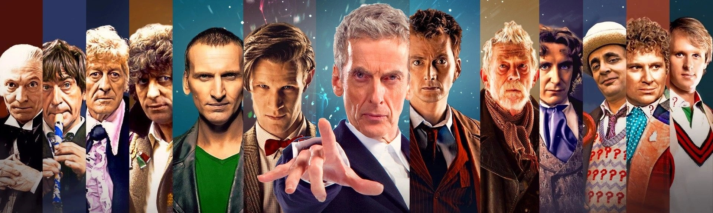
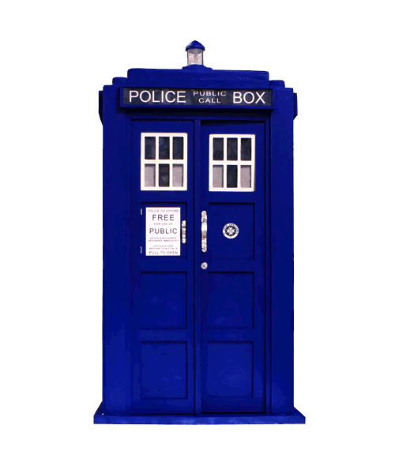

Doctor Who
Doctor Who is a British science fiction television programme broadcast by the BBC since 1963. The programme depicts the adventures of a Time Lord called the Doctor, an extraterrestrial being who appears to be human. The Doctor explores the universe in a time-travelling space ship called the TARDIS. The TARDIS exterior appears as a blue British police box, which was a common sight in Britain in 1963 when the series first aired. With various companions, the Doctor combats foes, works to save civilisations and helps people in need.